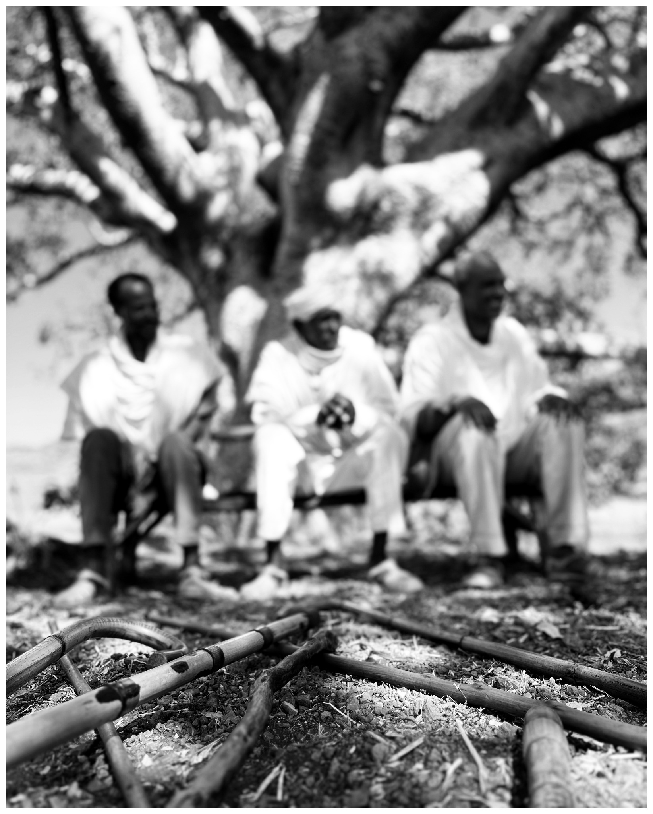
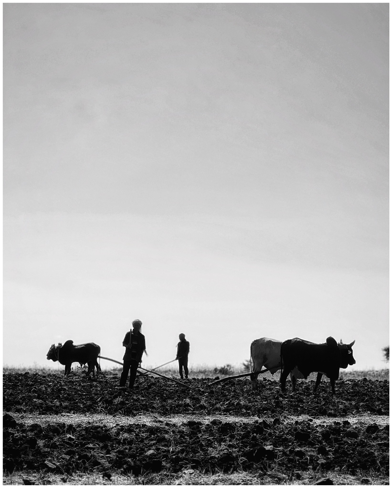
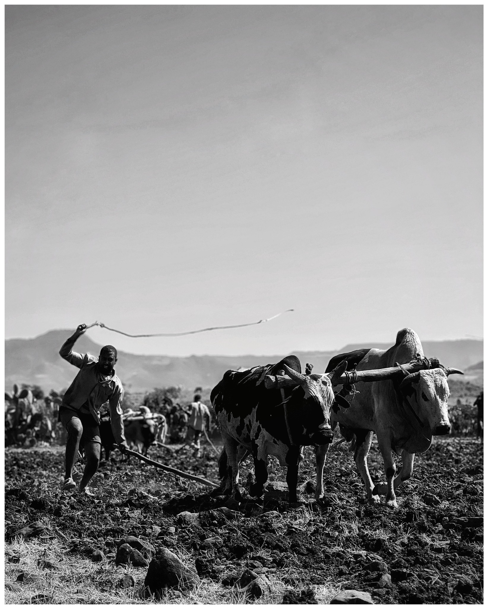

FEATURE FILM · 2022
Yadam Kal የአዳም ቃል
Co-directed by Ayelign Tsega and Dagim Sisay. Written by Dagim Sisay. Produced by Lozawyan Film Production.
Watch the full film ↗ETHIOPIAN FILMMAKER
Ayelign Tsega — Film Director & Screenwriter
Explore the films ↘I am an Ethiopian filmmaker interested in the quiet tensions of ordinary life — the people, places, memories and choices that shape who we become.
Raised in a farming family in rural Ethiopia, my early experiences of the land and the rhythms of agricultural life continue to shape my perspective on cinema. I studied Theatre Arts at Addis Ababa University, graduating with distinction, and have worked across theatre, radio, television and film.
Get in touch ↗FEATURE FILM · 2025
Kinde is a respected farmer whose life is deeply connected to his only farming ox, Damena. When a personal conflict grows into a dispute involving families, village elders and the wider community, Kinde is ordered to surrender the animal as compensation. But Damena is more than an ox: it is his partner in farming, his means of survival and an inseparable part of his life. Unwilling to sacrifice it, Kinde leaves his village, beginning a journey shaped by dignity, responsibility and the difficult choices people make when their values collide with social expectations.
Watch the trailer ↗Images from the film.



20th Ethiopian International Film Festival
Black Lion — Kenja
Ge'ezopics — Ayelign Tsega
Dinkneh — Cherenet Fikadu
Dinknesh — Meskerem Abera
Rainbow / Kestedemena — Surafel Mezgebe
With appreciation to the cast and crew.
Cherenet Fikadu · Meskerem Abera · Solomon Ewnetu
Moments from the making of the film.
.JPG)
.JPG)
.JPG)
.JPG)
.JPG)
.JPG)
Completed work and projects in development.
FEATURE FILM · 2022
Co-directed by Ayelign Tsega and Dagim Sisay. Written by Dagim Sisay. Produced by Lozawyan Film Production.
Watch the full film ↗IN DEVELOPMENT
Feature screenplay by Ayelign Tsega. Currently in development.
A CINEMATIC BELIEF
“Ethiopian cinema should draw from Ethiopian agriculture.”
For me, the lives of farmers, the land, labour, culture and memory are rich sources of cinematic identity — not limits on where our stories can go.
I am drawn to the quiet complexities of ordinary human life—the moments people struggle to explain, the choices they make, and the contradictions they carry within themselves.
My understanding of cinema comes partly from growing up in rural Ethiopia, surrounded by farming, land, and the rhythms of everyday life. I believe Ethiopian cinema can discover a distinctive voice by drawing from the country's agricultural roots: its people, landscapes, labour, traditions, and changing ways of life. This is not about limiting cinema to rural stories, but about finding an authentic foundation from which different stories can emerge.
I am interested in human beings in their full complexity. I do not want to divide characters into good and bad, or guide audiences towards a predetermined judgment. I want to observe them closely, allow their actions and silences to speak, and create space for audiences to question, interpret, and feel for themselves.
I value cinema that trusts images, gestures, sounds, and silence as much as dialogue. Ultimately, I want to make films that are deeply rooted in their surroundings yet speak beyond them.
Ayelign Tsega is an Ethiopian filmmaker, director, and screenwriter whose work explores the complexities of ordinary human life. Raised in a farming family in rural Ethiopia, his early experiences of the land, agricultural life, and the people around him continue to shape his perspective on cinema.
He studied Theatre Arts at Addis Ababa University, graduating with distinction. His professional journey has included theatre, radio drama, television, and film. He also served as an assistant lecturer at Bahir Dar University and as a second assistant director on the television drama Tilla, directed by Michael Milion.
Ayelign directed and wrote the feature film Kenja (ቀንጃ) and co-directed Yadam Kal (የአዳም ቃል) with Dagim Sisay. His feature screenplay Agumas (አጉማስ) is currently in development.
His artistic approach is rooted in observing people rather than judging them. He is interested in the contradictions, silences, struggles, and tenderness that make human beings complex. He believes Ethiopian cinema should draw from Ethiopian agriculture—not as a limitation to rural stories, but as a source of cultural identity, memory, and cinematic expression.
LET'S CONNECT
For professional inquiries, screenings, distribution and creative collaborations.